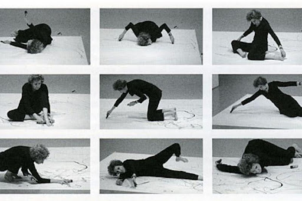
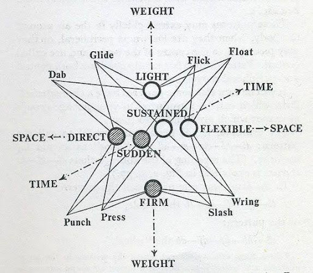
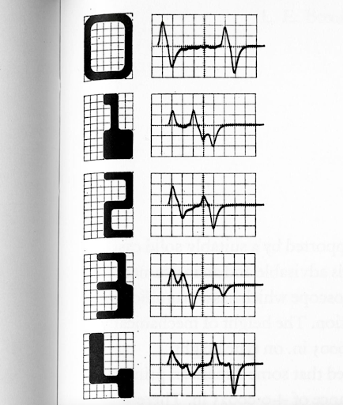
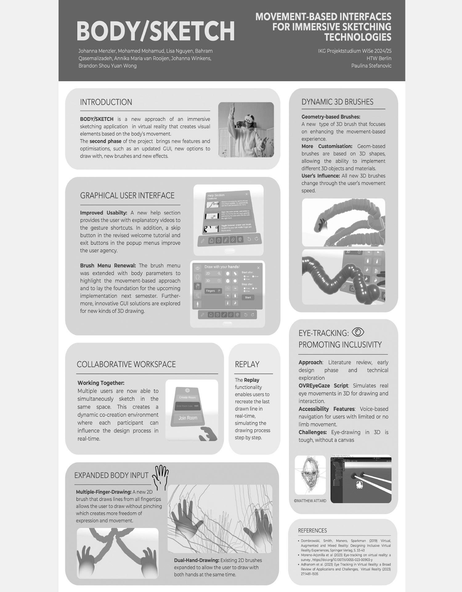

Trisha Brown, “It’s a Draw/Live Feed” (2003)

Effort diagram after Rudolf LabanMovement-based research
Software research
Ongoing, 2023–present
Spatial interaction + Methods & interfaces
№03 / 04 · 01 Research
Lead
Translating continuous movement qualities into discrete, programmable functions for an immersive drawing interface.
Short description
Most XR, CAVE and sensor-based software makes the body central as a perceiving subject, but not as an active agent: movement qualities, position and different body parts are left out of input design, which mostly relies on hand controllers.
References
Rudolf Laban (1879–1958)
Trisha Brown, “It’s a Draw/Live Feed” (2003)
L. E. Boxall, “Printing with magnetic inks”
Credits
Designed and developed by students of HTW University of Applied Sciences Berlin, IKG (Informatik in Kultur und Gesundheit), 2023–2026. Concept and supervision by the author of this archive.
Body-Sketch UI — draw with your fingers
Fig 5: Perception, action, interface

L. E. Boxall, “Printing with magnetic inks”About the study
Body-Sketch is an ongoing system development that creates a working software application for an immersive 3D drawing interface. Users interact through a wide range of motion inputs, from subtle hand gestures to full-body interaction. This broadens input modalities and the accessibility of 3D drawing technology across fields.
Objectives
The software translates continuous movement qualities into discrete coded functions for an immersive drawing interface. Though the applied use case is drawing, the concept can be expanded to other applications.
Eye drawing — an inclusive feature
Eye drawing introduces gaze as an input modality for immersive sketching: the system translates eye movements into a drawing cursor instead of moving controllers. This enables hands-free or hybrid workflows, reduces reliance on controllers and extends embodied interaction beyond the hand — opening tool design towards inclusivity while keeping a user-centred path at its core.
 Body/Sketch poster: concept and development
Body/Sketch poster: concept and development
Body/Sketch poster: features